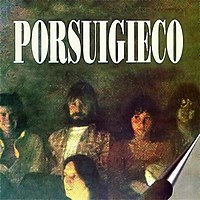
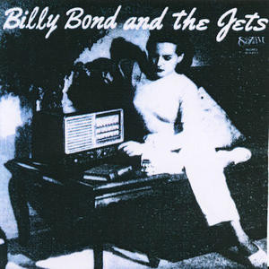
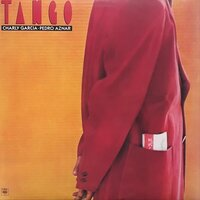
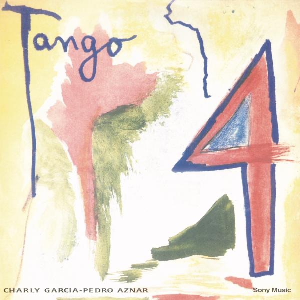

Otros proyectos de Charly:
Sobre esta sección:
Se enumeran aquí proyectos paralelos de Charly García desde colaboraciones con otros artistas hasta reuniones eventuales que no pueden ser consideradas parte de una banda estable. Asimismo, incluye una breve descripción del material en sí, acompañada del contexto en el cual se publicó.
Discografía
-

Porsuigieco (1976)
Pensado como un proyecto informal, reunidos para salir de gira, PorSuiGieco fue un grupo compuesto por Raúl Porchetto, Charly García, Nito Mestre, León Gieco y María Rosa Yorio. De este álbum destacan las canciones "La Colina de la Vida" y "El Fantasma de Canterville" que serían versionadas y difundidas posteriormente por León Gieco como solista.
-

Billy Bond and The Jets (1978)
Billy Bond se reunió con los Serú Girán en Brasil para producirles su primer disco, durante los descansos de esta grabación decide volver a trabajar en un LP, esta vez teniendo como apoyo a Serú (bautizados por cuestiones legales como "The Jets"). De este disco surgiría "Loco, ¿no te sobra una moneda?", tocada años después por García.
-

Tango (1986)
A veces acreditado erróneamente a García en solitario, "Tango" es un maxisencillo publicado por el dúo homónimo, compuesto por Charly García y Pedro Aznar. Habiendo sido compañeros en Serú Girán, García y Aznar se reúnen para publicar seis canciones, dos compuestas por Aznar, dos por García y dos escritas en conjunto. De este material destacan "Hablando a Tu Corazón" y "Pasajera en Trance".
-

Tango 4 (1991)
Producto de una nueva Reunión del dúo, este disco hace notar aún más la calidad musical de Pedro Aznar, muy presente con el sonido de su bajo y cantando en la mayoría de canciones. Tuvo invitados de gran calibre, como Sandro en "Rompan Todo" y la guitarra de Gustavo Cerati en "Vampiro".
-
Alta Fidelidad (1997)
Alta Fidelidad es un álbum grabado en conjunto por García y Mercedes Sosa. Estuvo muy cerca de no ser publicado debido a roces entre García y el equipo de producción; después un largo tiempo de abandono, el proyecto sería terminado con otro productor. Este disco cuenta además con invitados como Luis Alberto Spinetta, Andrés Calamaro, Juanse y María Gabriela Epumer.